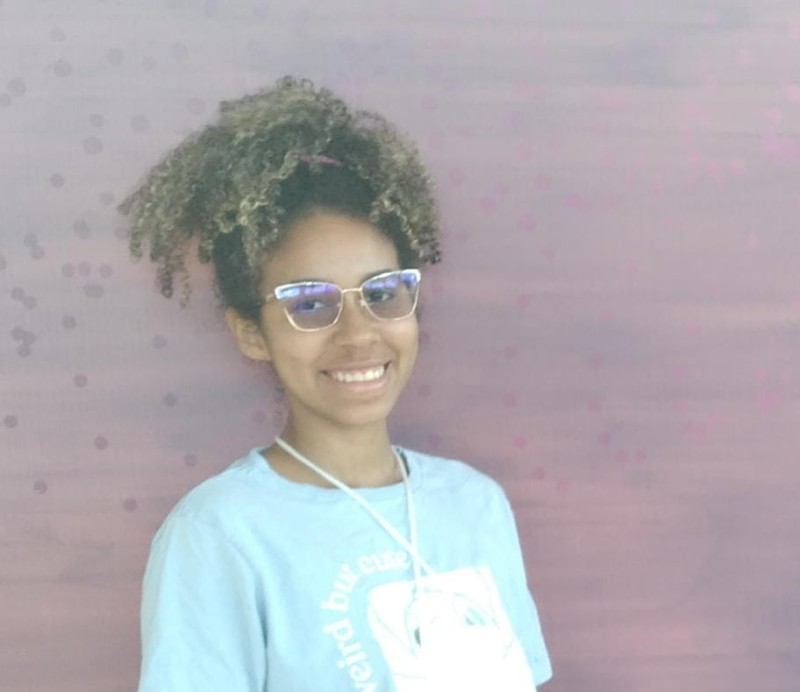

Sobre mim
Olá! Meu nome é Maria Eduarda, sou estudante de Análise e Desenvolvimento de Sistemas. Atualmente trabalho com suporte ao cliente, o que tem me ajudado bastante a desenvolver a habilidade de resolver problemas com agilidade.
Tenho conhecimentos em HTML, CSS, Javascript, Python, Java e também em Excel(nível intermediário). Estou sempre buscando aprender mais e no momento, meu foco é me aprofundar na área de análise de dados.
Antes de entrar na área de tecnologia, tive a oportunidade de ensinar raciocínio lógico para concursos, uma experiência que reforçou minha paixão por lógica, resolução de problemas e também por compartilhar conhecimento.
Fora do mundo dos códigos gosto de cuidar da minha saúde e bem-estar. Meus hobbies incluem: musculação e corrida. São momentos que me ajudar a manter o foco e a disciplina.
Sou curiosa, determinada e estou sempre em busca de evolução.